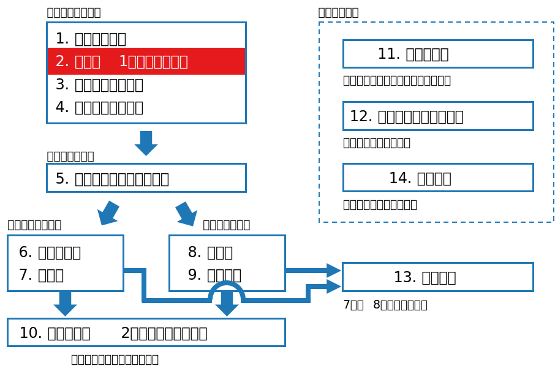
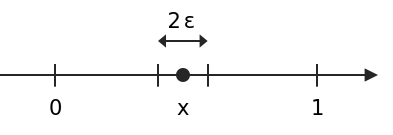

class: middle, center # 数理統計学特論I<br>第2回 確率と1次元の確率変数 奥 牧人 (和漢研) 2022/04/20 --- # 前回の復習 * 前回は大学1年生向けの教科書に出てくるキーワードの意味を<br>確認しました。 * 平均 * 分散 * 相関係数 * 正規分布 * 大数の法則 * 95%信頼区間 * t検定 * P値 * etc. --- # 今回の位置付け  --- # 今回の目的と達成目標 目的 * 確率に関する基本用語や主な1次元分布の意味を数式で理解すること 達成目標 * 期待値と分散の式を書ける。 * 母関数と特性関数の意味を説明できる。 * 2項分布と正規分布の式を書ける。 * 主な1次元分布の式の意味を説明できる。 --- # 予習用キーワードの確認 * 二項分布 * ポアソン分布 * 正規分布 --- # Outline 1. 確率と確率変数 2. 確率変数の期待値と分布の特性値 3. 母関数 4. 主な1次元分布 --- # Outline 1. **確率と確率変数** 2. 確率変数の期待値と分布の特性値 3. 母関数 4. 主な1次元分布 --- # 例 * 歪みのないコインを投げたとき、表の出る確率は $1/2$ * 表を $1$、裏を $0$ として、確率変数 $X$ で表す。 $$P(X=1) = \frac{1}{2}$$ * 確率変数は大文字、その実現値は小文字で書く場合が多い。 $$P(X=x) = \frac{1}{2},\quad x=0,1$$ --- # 離散変数の場合 * 確率質量関数 (確率関数) $$p(x) = P(X=x)$$ * 満たすべき性質 $$\begin{align}&p(x)\geq0,\quad \forall x\\\\ &\sum_xp(x)=1\end{align}$$ * 累積分布関数 (分布関数) $$F(x)=P(X\leq x)$$ --- # 連続変数の問題点 * 連続変数の場合、$P(X=x)$ は常に $0$ となってしまう。 * 例、$[0,1]$ の一様分布で $x\in(0,1)$ の場合 <div>$$P(X=x)=\lim_{\varepsilon\to 0}P(x-\varepsilon\leq X\leq x+\varepsilon)=\lim_{\varepsilon\to 0}2\varepsilon=0$$</div>  --- # 連続変数の場合 * 確率密度関数 (密度関数) $$p(x)=\lim_{\varepsilon\to0}\frac{P(x\leq X\leq x+\varepsilon)}{\varepsilon}$$ * 満たすべき性質 $$\begin{align}&p(x)\geq0,\quad \forall x\\\\ &\int_{-\infty}^{\infty}p(x)dx=1\end{align}$$ * 累積分布関数 (分布関数) $$F(x)=P(X\leq x)$$ * $p(x)=F'(x)$ が成り立つ。 --- # 基準化定数 * 基準化定数とは、合計が $1$ となるように調節するための定数 * 例えば、$\int_{-\infty}^\infty f(x)dx=c$ の場合、$p(x)=f(x)/c$ とおけば<br>合計が $1$ になる。 * 正規分布でいうと、指数関数が $f(x)$ なら、その左の部分 $$\frac{1}{\sqrt{2\pi}\sigma}\exp\left(-\frac{(x-\mu)^2}{2\sigma^2}\right)$$ --- # Outline 1. 確率と確率変数 2. **確率変数の期待値と分布の特性値** 3. 母関数 4. 主な1次元分布 --- # 期待値 * 離散変数の場合 $$E[X]=\sum_x xp(x)$$ * 連続変数の場合 $$E[X]=\int xp(x)dx$$ * ただし、積分範囲を省略した場合は $(-\infty,\infty)$ とする。 * 以降では $\mu=E[X]$ と書く場合もある。 --- # どうしてこれが平均なのか? * 標本平均 <div>$$\bar x= \frac{x_1+\cdots+x_n}{n}=\frac{1}{n}\sum_{i=1}^n x_i$$</div> * $X$ の取り得る値を $a_1,\ldots,a_K$ とし、それぞれの出現回数を<br>$n_1,\ldots,n_K$ とおく。 * $n$ 個の $x_i$ を同じ値ごとにまとめる。 <div>$$\begin{align}\frac{1}{n}\sum_{i=1}^n x_i&=\frac{1}{n}\sum_{k=1}^K n_k a_k\\&=\sum_{k=1}^K\frac{n_k}{n}a_k\to\sum_{k=1}^K p(a_k) a_k,\quad (n\to\infty)\end{align}$$</div> --- # 発散する場合もある * 取り得る状態が無限個の場合、発散する場合もある。 * 例、歪みのないコインを表が出るまで投げ、$k$ 回目で表が出たら $2^k$ のお金が貰えるとする。 $$P(X=2^k)=\frac{1}{2^k}$$ 期待値は無限大になる。ペテルスブルグのパラドックスと呼ぶ。 <div>$$E[X]=\sum_x xp(x) = \sum_{k=1}^\infty 2^k\frac{1}{2^k} = \infty$$</div> --- # 分散 * 一般に $X$ の関数 $f(X)$ の期待値を以下で定義する。 * 離散変数の場合 $$E[f(X)]=\sum_x f(x)p(x)$$ * 連続変数の場合 $$E[f(X)]=\int f(x)p(x)dx$$ * 分散の定義 $$V[X] = E[(X-\mu)^2]$$ --- # 期待値と分散の性質 * 常に成り立つ式 ($a,b$ は定数) $$\begin{align}V[X]&=E[X^2]-E[X]^2\\\\ E[aX+b]&=aE[X]+b\\\\ V[aX+b]&=a^2V[X]\\\\ E[X+Y]&=E[X]+E[Y]\end{align}$$ * $X$ と $Y$ が独立のときのみ成り立つ式 $$\begin{align}E[XY]&=E[X]E[Y]\\\\ V[X+Y]&=V[X]+V[Y]\end{align}$$ <!-- # 定義関数 * 定義関数 (指示関数) <div>$$I_A(x) = \left\{\begin{array}{cl}1&\mathrm{if}\quad x\in A\\0&\mathrm{otherwise}\end{array}\right.$$</div> * 後々使うのでここで紹介 --> --- # モーメント (積率) * 原点まわりの $k$ 次のモーメント $$\mu'_k=E[X^k]$$ * 平均値まわりの $k$ 次のモーメント $$\mu_k=E[(X-\mu)^k]$$ * $k$ 次の標準化モーメント $$\alpha_k=E\left[\left(\frac{X-\mu}{\sigma}\right)^k\right]$$ * 平均値は $\mu'_1$, 分散は $\mu_2$ * 歪度 (skewness) は $\alpha_3$, 尖度 (kurtosis) は $\alpha_4$ --- # パーセント点 * 上側 $5$ %点、下側 $5$ %点など * 累積分布関数の逆関数が一意に決まる場合は簡単 $$x(\alpha) = F^{-1}(\alpha),\quad\alpha\in(0,1)$$ * 一意に決まらない場合も含めて、以下で定義 $$\begin{align}x(\alpha)&=\frac{F_L^{-1}(\alpha)+F_R^{-1}(\alpha)}{2},\quad\alpha\in(0,1)\\\\F_L^{-1}(\alpha)&=\min\\{x|P(X\leq x)\geq\alpha\\}\\\\F_R^{-1}(\alpha)&=\max\\{x|P(X\geq x)\geq1-\alpha\\}\end{align}$$ * 例、$\\{1,2,3,4\\}$ の中央値は $(2+3)/2=2.5$ --- # 平均と分散の仲間 * 位置母数 (分布の中心の位置を表す) * 平均 * 中央値 (メディアン、50%点) * 最頻値 (モード) * 尺度母数 (分布の幅を表す) * 分散 * 標準偏差 * 四分位範囲 (75%点$-$25%点) * 四分位偏差 (四分位範囲の半分) --- # Outline 1. 確率と確率変数 2. 確率変数の期待値と分布の特性値 3. **母関数** 4. 主な1次元分布 --- # 母関数と特性関数 * 確率母関数 ($X$ は非負の整数、$|s|\leq 1$ とする) $$G(s)=E[s^X]$$ * 積率母関数 ($X$ は連続変数) $$\phi(\theta)=E[e^{\theta X}]$$ * 特性関数 ($X$ は離散と連続どちらでも良い、$i$ は虚数単位) $$\phi(t)=E[e^{itX}]$$ * これらは元の確率分布と1対1に対応しており、これらを使うことで計算が簡単になる場合がある。 * 例、平均と分散の計算、畳み込み、収束性の証明など --- # 母関数の性質 * 確率母関数を $s$ で $k$ 回微分し、$s=0$ を代入して $k!$ で割る $$G^{(k)}(0)/k!=p(k)$$ * 確率母関数を $s$ で $k$ 回微分し、$s=1$ を代入する $$G^{(k)}(1)=E[X(X-1)\cdots(X-k+1)]$$ * 積率母関数を $\theta$ で $k$ 回微分し、$\theta=0$ を代入する $$\phi^{(k)}(0)=E[X^k] = \mu'_k$$ --- # 特性関数の性質 * 離散変数の場合 $$p(x)=\frac{1}{2\pi}\int_{-\pi}^\pi e^{-itx}\phi(t)dt$$ * 連続変数の場合、 <div>$$\int_{-\infty}^\infty|\phi(t)|dt<\infty$$</div> という条件下で、以下が成り立つ $$p(x)=\frac{1}{2\pi}\int_{-\infty}^\infty e^{-itx}\phi(t)dt$$ --- # Outline 1. 確率と確率変数 2. 確率変数の期待値と分布の特性値 3. 母関数 4. **主な1次元分布** --- # 2項分布 * 成功確率 $p$ の試行を $n$ 回行ったとき、成功回数 $X$ が従う分布 * 確率質量関数 $$p(k)=\left(\begin{array}{c}n\\\\k\end{array}\right)p^k(1-p)^{n-k}$$ * 期待値と分散 $$\begin{align}E[X]&=np\\\\V[X]&=np(1-p)\end{align}$$ --- # 計算の例 * 2項分布の確率母関数 <div>$$\begin{align}G(s)&=\sum_{k=0}^ns^k\left(\begin{array}{c}n\\k\end{array}\right)p^k(1-p)^{n-k}\\&=\sum_{x=0}^n\left(\begin{array}{c}n\\k\end{array}\right)(sp)^k(1-p)^{n-k}\\&=(sp+1-p)^n\end{align}$$</div> * 平均は $G'(1)=E[X]=np$ * 分散は $G''(1)=E[X(X-1)]=n(n-1)p^2$ を用いて $$\begin{align}V[X]&=E[X^2]-E[X]^2=E[X(X-1)]+E[X]-E[X]^2\\\\&=n(n-1)p^2+np-(np)^2=np(1-p)\end{align}$$ --- # ポアソン分布 * 平均 $\lambda$ の2項分布で $p$ が小さいときに成功回数 $X$ が従う分布 * 確率質量関数 $$p(k)=\frac{e^{-\lambda}\lambda^k}{k!}$$ * 期待値と分散 $$E[X]=V[X]=\lambda$$ --- # 幾何分布 * ベルヌーイ試行で最初に成功するまでの失敗回数 $X$ が従う分布 * 確率質量関数 $$p(k)=p(1-p)^k$$ * 期待値と分散 $$\begin{align}E[X]&=\frac{1-p}{p}\\\\V[X]&=\frac{1-p}{p^2}\end{align}$$ --- # 負の2項分布 * ベルヌーイ試行で $r$ 回成功するまでの失敗回数 $X$ が従う分布 * 確率質量関数 $$p(k)=\left(\begin{array}{c}r+k-1\\\\k\end{array}\right)(1-p)^kp^r$$ * 期待値と分散 $$\begin{align}E[X]&=\frac{r(1-p)}{p}\\\\V[X]&=\frac{r(1-p)}{p^2}\end{align}$$ * 幾何分布を特殊な場合として含む --- # 超幾何分布 * $N$ 個の中から最初に $n_1$ 個、続いて $n_2$ 個を復元抽出するとき、重複して選ばれる個数 $X$ が従う分布 * 確率質量関数 $$p(k)=\frac{\left(\begin{array}{c}n_2\\\\k\end{array}\right)\left(\begin{array}{c}N-n_2\\\\n_1-k\end{array}\right)}{\left(\begin{array}{c}N\\\\n_1\end{array}\right)}$$ * 期待値と分散 $$\begin{align}E[X]&=\frac{n_1n_2}{N}\\\\V[X]&=\frac{n_1n_2(N-n_1)(N-n_2)}{N^2(N-1)}\end{align}$$ --- # 一様分布 * 範囲内で確率密度が一定の分布 * 確率密度関数 ($a<b$ とする) <div>$$p(x)=\left\{\begin{array}{cl}1/(b-a)&\mathrm{if}\quad x\in[a,b]\\0&\mathrm{otherwise}\end{array}\right.$$</div> * 期待値と分散 $$\begin{align}E[X]&=\frac{a+b}{2}\\\\V[X]&=\frac{(b-a)^2}{12}\end{align}$$ --- # 正規分布 * 確率密度関数 ($\sigma>0$ とする) $$f(x)=\frac{1}{\sqrt{2\pi}\sigma}\exp{\left(-\frac{(x-\mu)^2}{2\sigma^2}\right)}$$ * 期待値と分散 $$\begin{align}E[X]&=\mu\\\\V[X]&=\sigma^2\end{align}$$ * 標準正規分布 ($\mu=0$, $\sigma=1$) の場合 $$f(x)=\phi(x)=\frac{1}{\sqrt{2\pi}}e^{-x^2/2}$$ --- # ガンマ分布 * ガンマ関数 ( $a>0$ とする) $$\Gamma(a)=\int_0^\infty x^{a-1}e^{-x}dx$$ * ガンマ関数は $\Gamma(n)=(n-1)!$ を満たす * 確率密度関数 ( $x,\,\nu,\,\alpha >0$ とする) $$f(x)=\frac{x^{\nu-1}e^{-x/\alpha}}{\alpha^\nu\Gamma(\nu)}$$ * 指数分布 ( $\nu=1$ の場合) を特殊な場合として含む * 期待値と分散 $$E[X]=\nu\alpha,\quad V[X]=\nu\alpha^2$$ --- # ベータ分布 * ベータ関数 $$B(a,b)=\int_0^1x^{a-1}(1-x)^{b-1}dx$$ * ベータ関数は $B(a,b)=\Gamma(a)\Gamma(b)/\Gamma(a+b)$ を満たす * 確率密度関数 ( $x\in(0,1)$ とする) $$f(x)=\frac{x^{a-1}(1-x)^{b-1}}{B(a,b)}$$ * 期待値と分散 $$E[X]=\frac{a}{a+b},\quad V[X]=\frac{ab}{(a+b)^2(a+b+1)}$$ --- # 分布間の関係 * 2項分布 $\to$ 正規分布 ($p$ を固定して $n\to\infty$) * 2項分布 $\to$ ポアソン分布 ($np$ を固定して $n\to\infty$) * 幾何分布 (離散) と指数分布 (連続) が対応 * ガンマ分布 $\supset$ $\chi^2$ 分布 * ガンマ分布とベータ分布は、$t$ 分布と$F$ 分布の導出に使う * 紛らわしいもの * 2項分布 $\not\subset$ 負の2項分布 * 幾何分布 $\not\subset$ 超幾何分布 * 幾何分布 $\subset$ 負の2項分布 --- # まとめ 確率に関する基本用語や主な1次元分布の意味を説明しました。 1. 確率と確率変数 2. 確率変数の期待値と分布の特性値 <span class="times">!</span> 期待値と分散の式を書ける? 3. 母関数 <span class="times">!</span> 母関数と特性関数の意味を説明できる? 4. 主な1次元分布 <span class="times">!</span> 2項分布と正規分布の式を書ける? <span class="times">!</span> 主な1次元分布の式の意味を説明できる? --- # 小テスト * Moodleで小テストに回答して下さい。 * **期限は今週中** (日曜の23:59まで) とします。 * 繰り返し受験して構いません。最高得点で成績をつけます。 --- # 次回の予習用キーワード * 偏微分 * 行列式 * 多次元正規分布